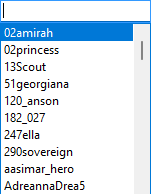
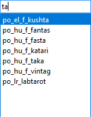

Use the Portrait Manager to review and maintain your installed portrait files.

The Portrait Manager displays a list of installed portraits and shows the base name of the Portrait file, the Mod used to install the files as well as the Large, Medium, Small and Huge portrait images.

Press the  Previous button, Left Arrow, Up Arrow or Backspace to select the previous portrait.
Previous button, Left Arrow, Up Arrow or Backspace to select the previous portrait.
Press the  Next button, Right Arrow, Down Arrow or Enter to select the next portrait.
Next button, Right Arrow, Down Arrow or Enter to select the next portrait.
The cursor changes as you move the mouse over the portrait image area and indicates the action that will be taken when you click in the image area...
 Opens the selected Portrait's Huge, Large, Medium, Small and Tiny image files in your TGA File Editor.
Opens the selected Portrait's Huge, Large, Medium, Small and Tiny image files in your TGA File Editor. Selects the previous portrait (move cursor to the left side of the portrait image area).
Selects the previous portrait (move cursor to the left side of the portrait image area). Selects the next portrait (move cursor to the right side of the portrait image area).
Selects the next portrait (move cursor to the right side of the portrait image area).
Exclude Portrait
Mark the selected Portrait for Wizard exclusion from the Mod Installer.
Apply Excludes
Create or update the Wizard used to exclude the portrait files marked for exclusion and then re-create the Installer to apply the Wizard exclusions.
The Portrait Manager is hidden while Mod Installers are created so you can see the progress. When the required Installers have been created, the Manager is shown with an updated portrait list.
Edit Portrait
Opens the selected Portrait's Huge, Large, Medium, Small and Tiny image files in your TGA File Editor.
This is only visible when you have defined a TGA File Editor on the Locations page in Advanced Settings and the selected portrait is available as a non-compressed file in the source Mod's Download folder.
Create Installer
Re-creates the Mod Installer for the selected Portrait's source Mod. Installed Mods are uninstalled and then reinstalled after the Installer has been created.
Select Source
Selects the Portrait's source Mod and, if present, the Downloads folder. The Portrait Manager is automatically minimised, so you need to click the Windows Taskbar icon to restore the Portrait Manager's window.

This allows you to manipulate files in your Portrait Mod without the Portrait Manager obscuring the Installer Tool's window.
Enter text in Find Portrait to locate and select a portrait using the file name.


Open Web Page Icon
Opens the Portrait Image Web Page URL you defined on the Locations page in Advanced Settings.
This option is only shown when you specify a URL for Portrait Image Web Page on the Locations page in Advanced Settings and is intended for users that create Portraits using images obtained from a favourite Web Site.
Help Icon
Opens the Portrait Manager's Help page.
Use the Options menu to specify your preferences. You can also Right-Click the Portraits list or images area to see these options.

Include Portraits in Override and Ovr
Enable when you want to include the portraits held in the override and ovr folders.
Always Select Next Portrait
Enable to select the next or previous item after excluding a portrait based on whether you clicked the Next or Previous button (pressing the Down or Up Arrow has the same affect on which item is selected).
Invalid Portrait Size Report
Click to produce a list of portrait image files that are defined with an incorrect image size.
Close
Closes the Portrait Manager.
You can Right-Click the Portraits list or images area to select the operation you want to perform from the menu.

Have you ever downloaded a Portrait Pack that contained some portraits you never use or don't like? You can use Exclude Portrait to mark the ones you don't want to use and then Apply Excludes to create a Wizard that removes the portraits marked for exclusion from the associated Mod Installers. The updated Mods are automatically uninstalled and then reinstalled after the created or updated Wizard has been applied.


You can use the Wizard Builder to restore any portrait files you have excluded.
If you have defined a TGA File Editor on the Locations page in Advanced Settings, an  Edit Icon is shown next to each portrait available as a non-compressed file in the source Mod's Download folder. Edit Portrait is only shown in the ribbon when the selected Portrait can be edited.
Edit Icon is shown next to each portrait available as a non-compressed file in the source Mod's Download folder. Edit Portrait is only shown in the ribbon when the selected Portrait can be edited.
Edit Icon shown next to the portrait. You can also double-click the entry or right-click and select Edit Portrait from the popup menu.


|
|
Click the menu illustration to view information about other tools. |